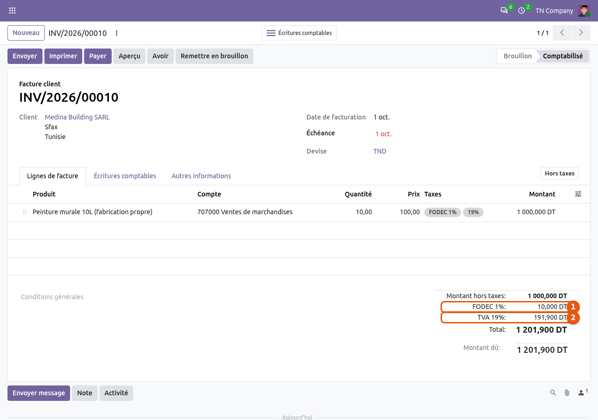
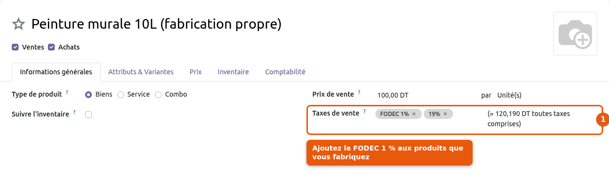
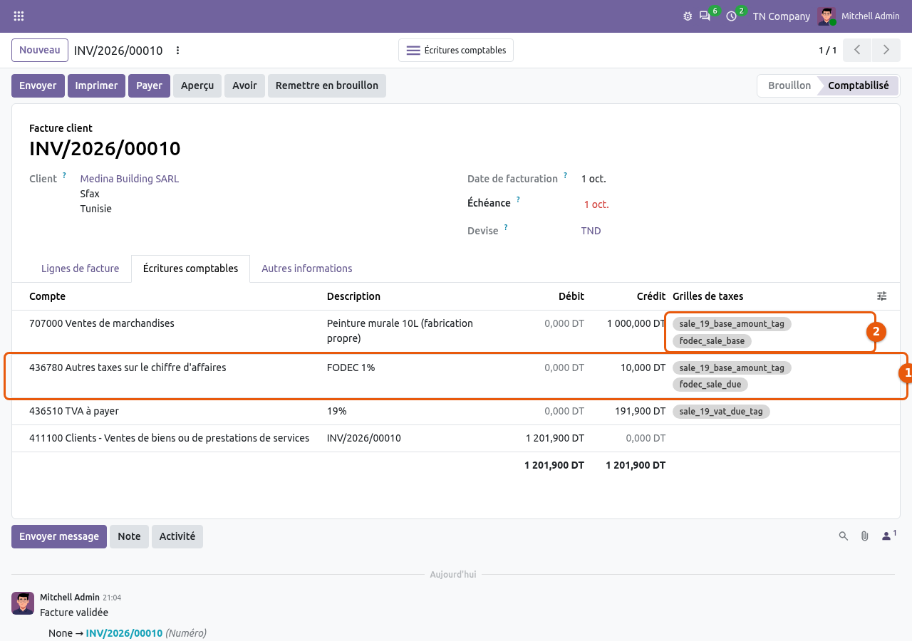
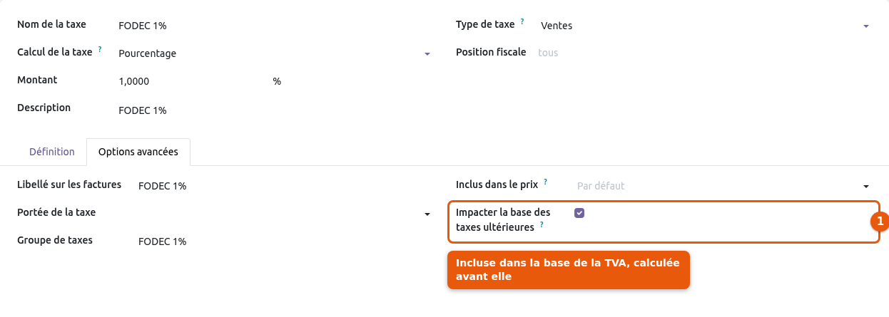

Invoice the Tunisian FODEC tax (1%) with the right VAT: the VAT is computed on the price plus the FODEC, as the Tunisian VAT code requires. The official Tunisian localization of Odoo (l10n_tn) has no FODEC tax: this module adds it, ready to use, for new and existing companies.

The FODEC (taxe professionnelle au profit du fonds de développement de la compétitivité) is due by the manufacturers of the products listed by decree, at 1% of their turnover excluding VAT. On an invoice of 1,000.000 TND with 19% VAT: FODEC 10.000, VAT 19% of 1,010.000 = 191.900, total 1,201.900.
What the module adds to the Tunisian chart of accounts:
a FODEC 1% sales tax, computed before the VAT and included in the VAT base, posted on account 43678 (other taxes on turnover, 436780 in the chart);
a FODEC 1% (cost) purchase tax, for the bills of manufacturers who invoice the FODEC: it is a cost, added to the expense or stock account, and the deductible VAT is computed on the right base;
the Export fiscal position replaces the FODEC by a FODEC 0% tax (exported products are exempt);
a FODEC line in the Tunisian tax report (base and FODEC due).
Legal basis: Finance Law for 2000 (Law no. 99-101 of 31 December 1999, art. 36 and 37), amended by the Finance Law for 2011 (Law no. 2010-58 of 17 December 2010, art. 15); list of products: Decree no. 2000-634 of 13 March 2000, completed by Decree no. 2008-4111 of 30 December 2008; VAT base including the other taxes: VAT code (Law no. 88-61 of 2 June 1988), art. 6. Checked in the French version of the Official Journal (JORT) on 5 October 2026; only the Arabic version is authentic. Ask your accountant to confirm how it applies to your business.
Invoice of 1,000.000 TND: (1) FODEC 1% = 10.000, (2) VAT 19% computed on 1,010.000 = 191.900.
Add FODEC 1% next to the VAT, only on the products subject to it.

(1) The FODEC is posted on account 436780 (other taxes on turnover) with the FODEC tax grid, and is part of the VAT base. (2) The sale is tagged as turnover subject to FODEC.

The FODEC tax affects the base of the VAT computed after it.

Create a quotation or an invoice for a product subject to the FODEC.
The totals show the untaxed amount, then FODEC 1%, then the VAT computed on the untaxed amount plus the FODEC.
For an export sale, set the Export fiscal position on the customer or on the invoice: it removes the FODEC and maps the VAT to 0%.
The FODEC due is posted on account 436780 and reported on the FODEC line of the Tunisian tax report.
Install the module on a database using the Tunisian chart of accounts (l10n_tn). The FODEC taxes are created for every Tunisian company, existing or new.
Only the products you manufacture and that are listed by decree are subject to the FODEC. On each of these products, add FODEC 1% next to the VAT in Sales Taxes.
On the bills of a supplier who invoices the FODEC, add FODEC 1% (cost) next to the VAT on the bill lines, or in the Purchase Taxes of the product.
Need |
Standard Odoo 20 (l10n_tn) |
With this module |
|---|---|---|
FODEC 1% sales tax |
✘ No |
✔ Yes |
VAT computed on price + FODEC |
✘ No |
✔ Yes |
FODEC removed on export |
✘ No |
✔ Yes |
FODEC line in the tax report |
✘ No |
✔ Yes |
Added to existing Tunisian companies |
✘ No |
✔ Yes |
No, on purpose. The FODEC is due only by the manufacturers of the products listed by decree, not by resellers. You add the FODEC tax to the products concerned, like any other tax. The default sales tax of the company stays the VAT alone.
After: the VAT base includes the FODEC (VAT code, art. 6). On 1,000.000 TND: FODEC 10.000, VAT 19% on 1,010.000.
No text provides for it: the FODEC is not a VAT. The purchase tax FODEC 1% (cost) adds it to the cost of the bill line, and the deductible VAT is computed on the price plus the FODEC.
The Export fiscal position replaces the FODEC by a FODEC 0% tax. Sales under suspension of VAT and FODEC (to totally exporting companies, with a stamped purchase order) are not handled by this module.
Yes. The 1 DT stamp is a fixed amount: it is not affected by the FODEC. With Fiscal Stamp per Invoice, the stamp is added once per invoice next to the FODEC and the VAT.
Odoo Online only installs the modules of Odoo S.A. Use Odoo.sh or your own server.
The FODEC paid at customs on imports is not covered: it is paid with the customs duties, not on a supplier bill.
Sales and purchases under suspension of VAT and FODEC (totally exporting companies) are not covered.
The tax report is displayed by the Accounting app (Odoo Enterprise). In Odoo Community, the FODEC is still posted and tagged, and visible in the journal items.
The rate (1%) and the legal basis were checked on 5 October 2026. They are checked again at each Tunisian finance law.
Ask us anything about Tunisia - FODEC Tax: setup, your use case, your Odoo version.
Contact supportsupport@eggsforge.com
Migration to Odoo 20.
Migration to Odoo 19: the export exemption is a FODEC 0% tax that replaces the FODEC, as fiscal positions now work with replacement taxes.
First release: FODEC 1% sales and purchase taxes, VAT on price + FODEC, export exemption, tax report line, install on existing Tunisian companies.